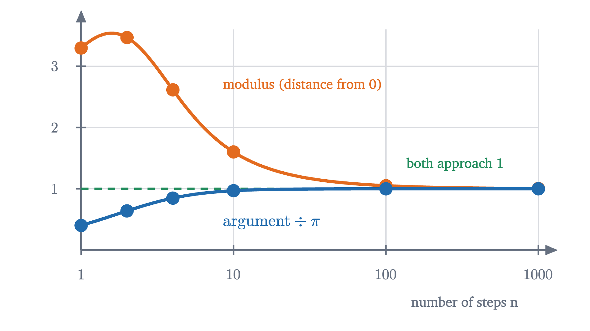
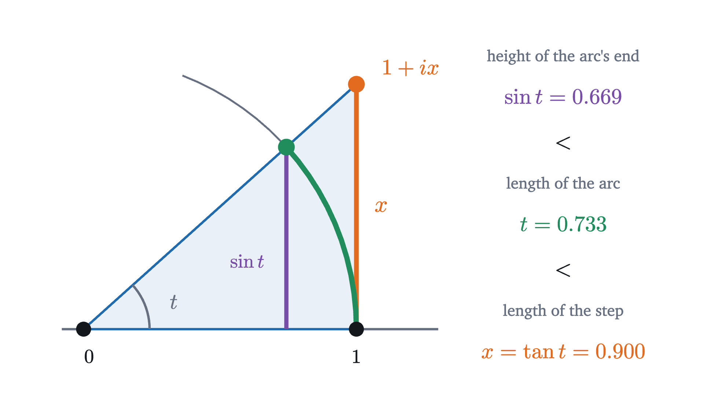
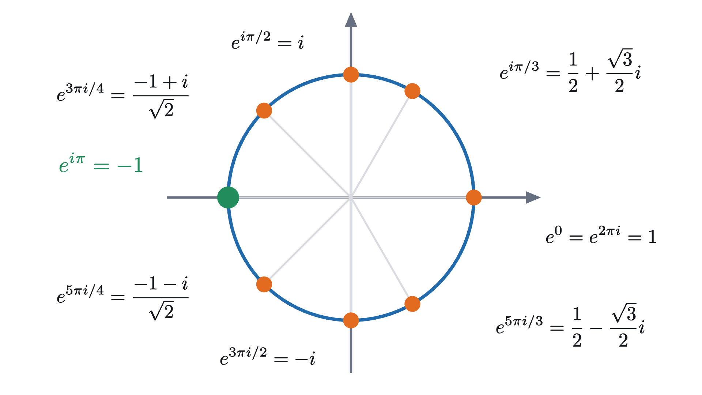

Euler's formula: why e^(iπ) = -1
You cannot multiply e by itself iπ times, so the famous equation needs a definition first. Compound interest supplies one, and it leads around a circle.
AssumesComplex numbers: why multiplying by i is a quarter turnCompound interest and where e comes fromRadians: measuring an angle by the arc it cuts
The equation $e^{i\pi} = -1$ is printed on mugs and T-shirts, and it deserves a harder look than a mug invites. A power means repeated multiplication: $e^3$ is $e \cdot e \cdot e$. Nobody can multiply $e \approx 2.718$ by itself $i\pi$ times, so before asking whether the equation is true we have to ask what its left side means.
The honest answer is that someone has to decide. The symbol $e^{i\pi}$ has no meaning until it is given one by a definition, and once it has one, “$e^{i\pi} = -1$” becomes a theorem about that definition, which can be proved. This lesson makes the definition, explains why it is the natural one, and proves the theorem. The proof gives more than one equation. For every real number $\theta$ it gives Euler’s formula, $e^{i\theta} = \cos\theta + i\sin\theta$.
A description of e to the x that survives a complex x
We need a way of computing $e^x$ that does not involve “multiplying $x$ times”. The lesson on compound interest found one. A dollar earning interest at rate $x$ per year, paid in $n$ equal instalments, is multiplied by $1 + \frac{x}{n}$ at each payment and is worth $\left(1 + \frac{x}{n}\right)^n$ at the end of the year. As the payments become more frequent this approaches a ceiling, and the ceiling is $e^x$:
Look at what the left side asks us to do: divide $x$ by a whole number, add 1, and multiply the result by itself $n$ times, where $n$ is a whole number. The exponent $x$ has moved inside the bracket, and the only power left is a whole-number power. All of these operations make sense for complex numbers, which are the points $a + bi$ of the plane, multiplied by the rule $(a + bi)(c + di) = (ac - bd) + (ad + bc)i$ that comes from $i^2 = -1$.
So let us put $x = i\pi$ into the left side and compute. With $n = 1$ there is nothing to multiply: the value is $1 + i\pi \approx 1 + 3.14i$, which is nowhere near $-1$.
Pause and try
Compute the case $n = 2$, that is $\left(1 + \frac{i\pi}{2}\right)^2$, by multiplying out. Use $\pi^2 \approx 9.87$. Is it closer to $-1$ than $1 + i\pi$ was?
Show answerHide answer
$\left(1 + \frac{i\pi}{2}\right)^2 = 1 + 2 \cdot \frac{i\pi}{2} + \frac{i^2\pi^2}{4} = \left(1 - \frac{\pi^2}{4}\right) + i\pi \approx -1.47 + 3.14i$. Its real part has moved past $-1$, but it is just as high above the real axis as before, so its distance from $-1$ has only fallen from about $3.72$ to about $3.18$.
Here are more values, computed the same way (by machine, for the larger $n$).
| $n$ | $\left(1 + \frac{i\pi}{n}\right)^n$ |
|---|---|
| 1 | $1.000 + 3.142i$ |
| 2 | $-1.467 + 3.142i$ |
| 4 | $-2.321 + 1.204i$ |
| 10 | $-1.593 + 0.156i$ |
| 100 | $-1.051 + 0.001i$ |
| 1000 | $-1.005 + 0.000i$ |
The values wander through the plane and then close in on $-1$. The table shows that it happens and gives no hint of why. For that we have to watch the multiplications one at a time.
One multiplication is a small turn and a small stretch
Take any complex number $z$ and multiply it by $1 + \frac{i\pi}{n}$:
Multiplying by $i$ is a quarter turn about 0, so $iz$ is as long as $z$ and at a right angle to it. The new point is therefore the old point plus a step sideways: at a right angle to the line from 0 to $z$, of length $\frac{\pi}{n}$ times the distance of $z$ from 0. Here is $n = 4$, where each step is $\frac{\pi}{4} \approx 0.79$ times the current distance.
From here on, angles are measured in radians: the size of an angle is the length of the arc it cuts from a circle of radius 1. A full turn is $2\pi \approx 6.28$, a half turn is $\pi$, a right angle is $\frac{\pi}{2}$. The reason for the switch is in the figure. The first step has length $\frac{\pi}{4} \approx 0.785$ and turns the point through $0.666$ radians, two numbers that are suspiciously close, and with degrees ($38.1^\circ$) the kinship would be invisible.
The lesson on complex numbers proved that multiplication is a stretch together with a turn. Every complex number $w \ne 0$ has a modulus $|w|$, its distance from 0, and an argument, the angle from the positive real axis to the direction of $w$; when two numbers are multiplied, their moduli multiply and their arguments add. Our multiplier $w = 1 + \frac{i\pi}{n}$ is the point one unit right and $\frac{\pi}{n}$ up, so
Multiplying $n$ copies of $w$ multiplies $n$ equal moduli and adds $n$ equal arguments:
For $n = 4$ these are $1.2716^4 \approx 2.61$ and $4 \times 0.6658 \approx 2.66$, as in the figure. For the value to approach $-1$, the modulus must approach 1 and the argument must approach $\pi$. The second is plausible, since each turn is a bit less than $\frac{\pi}{n}$ and there are $n$ of them. The first is not obvious at all.
Pause and try
Every step stretches, by a factor greater than 1. Taking more steps makes each stretch milder, but there are more of them. Compute the total stretch $\left(\sqrt{1 + \pi^2/n^2}\right)^n$ for $n = 10$ and for $n = 100$ with a calculator, and decide which effect is winning.
Show answerHide answer
For $n = 10$ each step stretches by $\sqrt{1.0987} \approx 1.0482$, and $1.0482^{10} \approx 1.60$. For $n = 100$ each step stretches by $\sqrt{1.000987} \approx 1.000493$, and $1.000493^{100} \approx 1.051$. The mildness wins. With ten times as many steps, the excess of each stretch over 1 fell by a factor of about 100 (from $0.048$ to $0.0005$), which more than pays for having ten times as many.
Here is the reason the stretch dies out. For a small number $x$, a step of size $x$ at a right angle changes the distance from 0 from 1 to $\sqrt{1 + x^2}$, and $\sqrt{1 + x^2}$ is less than $1 + \frac{x^2}{2}$ (square both to compare). The excess depends on the square of the step. With $x = \frac{\pi}{n}$ each step contributes an excess of at most $\frac{\pi^2}{2n^2}$, and $n$ such contributions amount to roughly $\frac{\pi^2}{2n}$, which shrinks as $n$ grows. For $n = 100$ this estimate is $0.049$, and the true excess in the table is $0.051$. The turn, by contrast, is proportional to the step itself: about $\frac{\pi}{n}$ each, about $\pi$ in total, whatever $n$ is. A sideways step turns you in proportion to its length and pushes you outward only in proportion to its length squared.

The definition, and Euler’s formula
Nothing in this reasoning was special to $\pi$. Replace it by any real number $\theta$: each step is at a right angle and has relative size $\frac{\theta}{n}$, the total turn should be about $\theta$, and the stretch should die out. So $\left(1 + \frac{i\theta}{n}\right)^n$ ought to approach the point of the unit circle at angle $\theta$. Here is a path of 200 steps while $\theta$ runs from 0 to $2\pi$.
We now state exactly what we are defining and what we claim. First, the meaning of a limit for points of the plane: it is the meaning for real numbers, with distance in the plane in place of distance on the line.
Be clear about the roles. For a real exponent, $e^x$ already had a meaning and “$(1 + \frac{x}{n})^n \to e^x$” was a theorem. For an imaginary exponent there is no earlier meaning, so we promote that theorem to a definition. Nothing has been proved by doing so. The content is in the theorem: the limit exists, and it is the point of the unit circle that trigonometry calls $(\cos\theta, \sin\theta)$.
The proof needs two estimates. The first is an inequality for whole-number powers, Bernoulli’s inequality: if $0 \le x \le 1$ and $n \ge 1$, then $(1 - x)^n \ge 1 - nx$. It is true for $n = 1$, and if it is true for some $n$ then multiplying both sides by $1 - x \ge 0$ gives $(1 - x)^{n+1} \ge (1 - nx)(1 - x) = 1 - (n+1)x + nx^2 \ge 1 - (n+1)x$, so it is true for $n + 1$, and hence for every $n$. The second estimate compares an angle with its tangent, and it is the one place where radians are indispensable.

The figure shows the standard fact that $\sin t < t < \tan t$ whenever $0 < t < \frac{\pi}{2}$ and $t$ is in radians. The reason is a comparison of areas: the triangle with corners 0, 1 and the end of the arc has area $\frac12\sin t$; it sits inside the circular sector, of area $\frac12 t$; and the sector sits inside the blue triangle, of area $\frac12\tan t$. We cite this inequality and do not prove it, because a full proof has to start from a definition of arc length.
Three things in the proof were used without proof and should be named: the inequality $\sin t < t < \tan t$; the fact that a straight path between two points is shortest (the triangle inequality in step 4, and “chord at most arc”, which Problem 8 turns into a formula); and the squeeze principle, that a sequence trapped between two sequences with the same limit has that limit too (the lesson on limits proves it for functions, and the proof for sequences is the same). Steps 2 and 3 also took for granted that $\frac{\theta^2}{n}$ and $\frac{\theta^2}{n^2}$ have limit 0 as $n$ grows, and step 1 used the rule from the lesson on complex numbers that moduli multiply and arguments add. Everything else was computed in front of you. Check step 2 against the table: for $\theta = \pi$ and $n = 100$ it promises $1 \le r_n \le \frac{1}{1 - 0.0987} \approx 1.110$, and the true value is $1.051$.
Pause and try
Someone types e^(180i) into a calculator, intending a half turn in degrees. By the definition, which point of the unit circle is $e^{180i}$? Give its angle as a number between 0 and $2\pi$, and in degrees.
Show answerHide answer
The definition walks a distance of 180 around a circle whose circumference is $2\pi \approx 6.283$. That is 28 full laps ($28 \times 6.2832 = 175.93$) and $4.07$ more, so the point is at angle $4.07$ radians, which is $4.07 \times \frac{180^\circ}{\pi} \approx 233^\circ$. Its coordinates are $\cos 180 \approx -0.598$ and $\sin 180 \approx -0.801$. The formula $e^{i\theta} = \cos\theta + i\sin\theta$ is true only with $\theta$ in radians, because the step of length $\frac{\theta}{n}$ turns the point through nearly $\frac{\theta}{n}$ units of arc, and arc length on the unit circle is what a radian is.
Why this definition deserves the name
A definition cannot be wrong, but it can be a poor use of a good symbol. Writing our limit as a power of $e$ is justified if it behaves like one. The property that matters most is $e^{x}e^{y} = e^{x+y}$.
Written with cosines and sines, this theorem is the pair of angle addition formulas. The rule “arguments add” was itself proved from those formulas, so this is the same fact in new notation and not a new proof of it. The gain is in the notation: two formulas that are hard to remember have become one law of exponents.
There is also a second route to the same function, and many books take it as the definition. Calculus shows that for real $x$
the Taylor series of the exponential. Put $x = i\theta$ and use $i^2 = -1$, $i^3 = -i$, $i^4 = 1$:
The two brackets are the Taylor series of $\cos\theta$ and $\sin\theta$. This is a third piece of evidence, and it can be made into a proof, but as it stands it is a sketch: one must define what an infinite sum of complex numbers is, show that this one converges, and justify regrouping its terms. It is a theorem, which we cite, that the series converges for every complex number and has the same value as our limit. Either can be taken as the definition, and then the other is a theorem.
For a general complex exponent $a + bi$ one defines $e^{a + bi} = e^a\,e^{ib}$: the point at distance $e^a$ from 0 in the direction $b$ radians.
Worked examples

Where care is needed
Two limits of the result should be stated. The theorem is about the limit, and no term of the sequence equals it: the modulus $\left(1 + \frac{\pi^2}{n^2}\right)^{n/2}$ from step 1 is greater than 1 for every $n$, so none of the numbers $\left(1 + \frac{i\pi}{n}\right)^n$ is $-1$. And modulus 1 belongs to real $\theta$ only. For instance $e^{i \cdot i} = e^{-1} \approx 0.37$ under the general definition, a point inside the circle.
Stepping back, the hard part was the first question: what the symbol means. Once $e^{i\theta}$ is read as “take $n$ steps of relative size $\frac{\theta}{n}$ at right angles, and let $n$ grow”, the circle appears because a sideways step turns a point in proportion to its length and pushes it outward only in proportion to the square. The same idea, growth at a right angle to position, is how physics and engineering describe anything that rotates or oscillates. The power series we passed over is an infinite sum, and infinite sums need a definition of their own; the next lesson builds it on the simplest example, the geometric series.
Check yourself
Where in the complex plane is $e^{100i}$?
Problems
Work these on paper, with a sketch of the unit circle beside you. The first three repeat the lesson’s moves, the next three combine them, and the last two go further.
Problem 1
Write $e^{i\pi/6}$, $e^{3\pi i/2}$, $e^{-i\pi}$ and $e^{5\pi i/4}$ in the form $a + bi$.
Show solutionHide solution
Use $e^{i\theta} = \cos\theta + i\sin\theta$. $e^{i\pi/6} = \frac{\sqrt3}{2} + \frac12 i$. $e^{3\pi i/2} = 0 + (-1)i = -i$, three quarters of the way around. $e^{-i\pi} = \cos(-\pi) + i\sin(-\pi) = -1$: half the circle walked clockwise ends at the same point as half the circle walked counterclockwise. $e^{5\pi i/4} = -\frac{\sqrt2}{2} - \frac{\sqrt2}{2}i$, in the third quadrant.
Problem 2
The two-step approximation to $e^{i\pi/2}$ is $\left(1 + \frac{i\pi}{4}\right)^2$. Compute it in the form $a + bi$, and find its modulus and argument. How do they compare with those of $e^{i\pi/2} = i$?
Show solutionHide solution
$\left(1 + \frac{i\pi}{4}\right)^2 = 1 - \frac{\pi^2}{16} + \frac{i\pi}{2} \approx 0.383 + 1.571i$. The modulus is the square of $|1 + \frac{i\pi}{4}|$, which is $1 + \frac{\pi^2}{16} \approx 1.617$. The argument is $2\arctan\frac{\pi}{4} \approx 2 \times 0.6658 = 1.332$ radians. The target $i$ has modulus 1 and argument $\frac{\pi}{2} \approx 1.571$. As the lesson predicts, the approximation is too far out and has not turned far enough. (These are the first two steps of the four-step figure.)
Problem 3
Write $\sqrt3 + i$ in the form $re^{i\theta}$ and use it to compute $(\sqrt3 + i)^6$. Check by another method.
Show solutionHide solution
The modulus is $\sqrt{3 + 1} = 2$, and $\sqrt3 + i = 2\left(\frac{\sqrt3}{2} + \frac12 i\right) = 2e^{i\pi/6}$. So $(\sqrt3 + i)^6 = 2^6 e^{i\pi} = -64$. Check: $(\sqrt3 + i)^2 = 3 + 2\sqrt3\,i - 1 = 2 + 2\sqrt3\,i$; multiplying by $\sqrt3 + i$ gives $2\sqrt3 + 2i + 6i + 2\sqrt3\,i^2 = 8i$; and $(8i)^2 = -64$.
Problem 4
(a) Show that $e^{-i\theta}$ is the reciprocal of $e^{i\theta}$. (b) Show that $\cos\theta = \dfrac{e^{i\theta} + e^{-i\theta}}{2}$ and $\sin\theta = \dfrac{e^{i\theta} - e^{-i\theta}}{2i}$.
Show solutionHide solution
(a) By the law of exponents, $e^{i\theta}e^{-i\theta} = e^{i(\theta - \theta)} = e^{0} = \cos 0 + i\sin 0 = 1$. (b) Since $\cos(-\theta) = \cos\theta$ and $\sin(-\theta) = -\sin\theta$, Euler’s formula gives $e^{-i\theta} = \cos\theta - i\sin\theta$. Adding this to $e^{i\theta} = \cos\theta + i\sin\theta$ gives $2\cos\theta$, and subtracting it gives $2i\sin\theta$. Divide by 2 and by $2i$.
Problem 5
Use $e^{3i\theta} = \left(e^{i\theta}\right)^3$ to express $\cos 3\theta$ in terms of $\cos\theta$ alone and $\sin 3\theta$ in terms of $\sin\theta$ alone.
Show solutionHide solution
With $c = \cos\theta$, $s = \sin\theta$: $(c + is)^3 = c^3 + 3c^2(is) + 3c(is)^2 + (is)^3 = (c^3 - 3cs^2) + i(3c^2s - s^3)$. Comparing with $\cos 3\theta + i\sin 3\theta$ and using $s^2 = 1 - c^2$ and $c^2 = 1 - s^2$:
Check at $\theta = \frac{\pi}{3}$: $4 \cdot \frac18 - \frac32 = -1 = \cos\pi$.
Problem 6
Find all complex numbers $z$ with $z^3 = -8$ by writing $z = re^{i\theta}$. Verify one non-real solution by multiplying out.
Show solutionHide solution
$z^3 = r^3e^{3i\theta}$ and $-8 = 8e^{i\pi}$. Comparing moduli, $r^3 = 8$, so $r = 2$. Comparing directions, $3\theta$ and $\pi$ differ by a multiple of $2\pi$: $3\theta = \pi, 3\pi, 5\pi$, giving $\theta = \frac{\pi}{3}, \pi, \frac{5\pi}{3}$ (the next value, $\frac{7\pi}{3}$, is the first direction again). So $z = 2e^{i\pi/3} = 1 + \sqrt3\,i$, $z = 2e^{i\pi} = -2$, or $z = 2e^{5\pi i/3} = 1 - \sqrt3\,i$. Check: $(1 + \sqrt3\,i)^2 = 1 + 2\sqrt3\,i - 3 = -2 + 2\sqrt3\,i$, and $(-2 + 2\sqrt3\,i)(1 + \sqrt3\,i) = -2 - 2\sqrt3\,i + 2\sqrt3\,i + 6i^2 = -8$.
Problem 7
Use the bound in step 2 of the proof to find a number of steps $n$ that guarantees the modulus of $\left(1 + \frac{i\pi}{n}\right)^n$ is within $0.001$ of 1. Then use the estimate “excess $\approx \frac{\pi^2}{2n}$” from the lesson to judge how wasteful the guarantee is.
Show solutionHide solution
Step 2 gives $1 \le r_n \le \frac{1}{1 - \pi^2/n}$ for $n > \pi^2$. We need $\frac{1}{1 - \pi^2/n} \le 1.001$, that is $1 - \frac{\pi^2}{n} \ge \frac{1}{1.001}$, that is $\frac{\pi^2}{n} \le \frac{0.001}{1.001}$, so $n \ge 1001\pi^2 \approx 9879.5$. Any $n \ge 9880$ is guaranteed to work. The estimate $\frac{\pi^2}{2n} \approx 0.001$ suggests that $n \approx 4935$ is already about enough, so the guarantee asks for twice as many steps as needed. The proof gave away a factor of 2 when it replaced $r_n$ by $r_n^2$. A bound used in a proof has to be true and simple; it does not have to be tight.
Problem 8
Let $\alpha$ and $\beta$ be real. Show that the straight distance between the points $e^{i\alpha}$ and $e^{i\beta}$ of the unit circle is $2\left|\sin\frac{\alpha - \beta}{2}\right|$. Deduce the fact used in step 4 of the proof: the chord is at most the arc $|\alpha - \beta|$.
Show solutionHide solution
Throughout, read $e^{i\theta}$ as a name for the point $\cos\theta + i\sin\theta$. The law of exponents for these points is the rule that arguments add, which does not depend on Euler’s formula, so using it here to supply a step of that formula’s proof is not circular. Let $m = \frac{\alpha + \beta}{2}$ and $\delta = \frac{\alpha - \beta}{2}$, so $\alpha = m + \delta$ and $\beta = m - \delta$. By the law of exponents, $e^{i\alpha} - e^{i\beta} = e^{im}\left(e^{i\delta} - e^{-i\delta}\right) = e^{im} \cdot 2i\sin\delta$, using Problem 4. Moduli multiply, and $|e^{im}| = 1$, $|2i| = 2$, so the distance is $2|\sin\delta|$. For the deduction we need $|\sin\delta| \le |\delta|$. If $0 < \delta < \frac{\pi}{2}$ this is the cited inequality $\sin t < t$. If $\delta \ge \frac{\pi}{2}$ then $|\sin\delta| \le 1 < \frac{\pi}{2} \le \delta$. Negative $\delta$ follows because both sides are unchanged when $\delta$ changes sign, and $\delta = 0$ gives $0 \le 0$. Hence the distance is at most $2|\delta| = |\alpha - \beta|$.